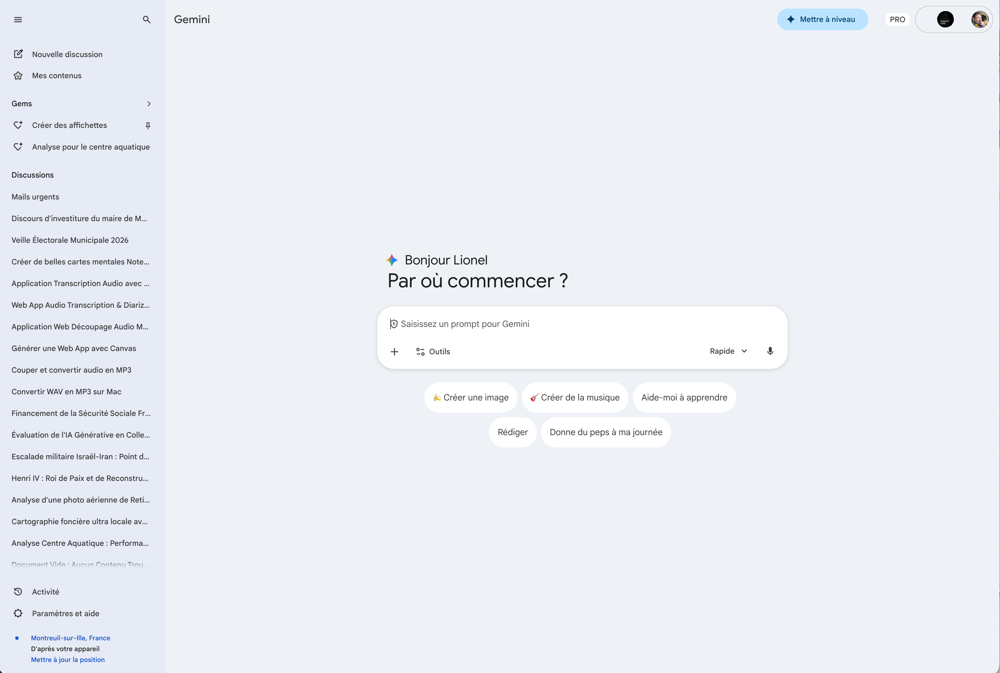

Les outils du chat
La barre de saisie de Gemini ne se limite pas à taper du texte. Elle intègre de nombreuses options pour enrichir vos conversations : importer des fichiers, activer des outils créatifs, choisir le bon mode de réponse ou même parler directement à l'IA. Découvrez toutes les possibilités à votre disposition.
Cliquez sur les pastilles orange pour découvrir chaque fonctionnalité

Cliquez sur une pastille pour en savoir plus